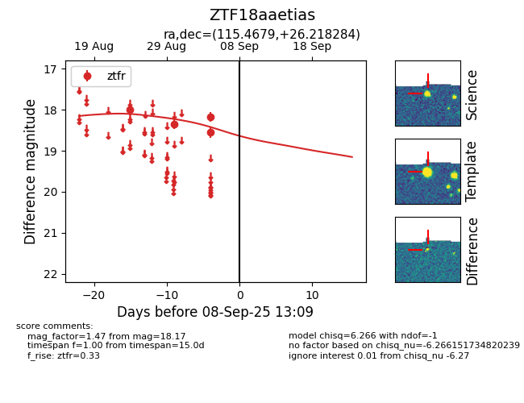

FINK: ZTF18aaetias
Lasair: ZTF18aaetias
ALeRCE: ZTF18aaetias
ZTF18aaetias (ztf,fink)
equatorial (ra, dec) = (115.4679,+26.21828)
galactic (l, b) = (193.7892,+22.06979)

last ztfr=18.17
4 ztfr detections